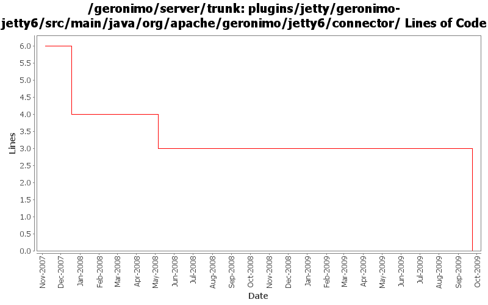

[root]/plugins/jetty/geronimo-jetty6/src/main/java/org/apache/geronimo/jetty6/connector

| Author | Changes | Lines of Code | Lines per Change |
|---|---|---|---|
| Totals | 16 (100.0%) | 6 (100.0%) | 0.3 |
| akulshreshtha | 2 (12.5%) | 3 (50.0%) | 1.5 |
| djencks | 5 (31.3%) | 2 (33.3%) | 0.4 |
| jdillon | 3 (18.8%) | 1 (16.7%) | 0.3 |
| pmcmahan | 2 (12.5%) | 0 (0.0%) | 0.0 |
| dwoods | 4 (25.0%) | 0 (0.0%) | 0.0 |
some pom cleanup and remove old jetty6 plugin files
0 lines of code changed in 4 files:
GERONIMO-4258 clean up some naming constant usage
2 lines of code changed in 5 files:
More loggers back to static
1 lines of code changed in 1 file:
(GERONIMO-3985) Use SLF4J as the primary logging facade for Geronimo
0 lines of code changed in 2 files:
GERONIMO-3712 Include ConnectionsCount statistics in TimeStatistics named ConnectionsDuration.
JettyWebContainer : Include RequestCount statistics in TimeStatistics named RequestDuration.
Remove RequestDurationAverage
2 lines of code changed in 1 file:
GERONIMO-3608 Move Jetty*Stats and Jetty*StatsImpl to geronimo-management
1 lines of code changed in 1 file:
GERONIMO-3523 increase the header buffer size to 8k for jetty connector and make the setting configurable
for new and existing jetty web connectors
0 lines of code changed in 2 files: